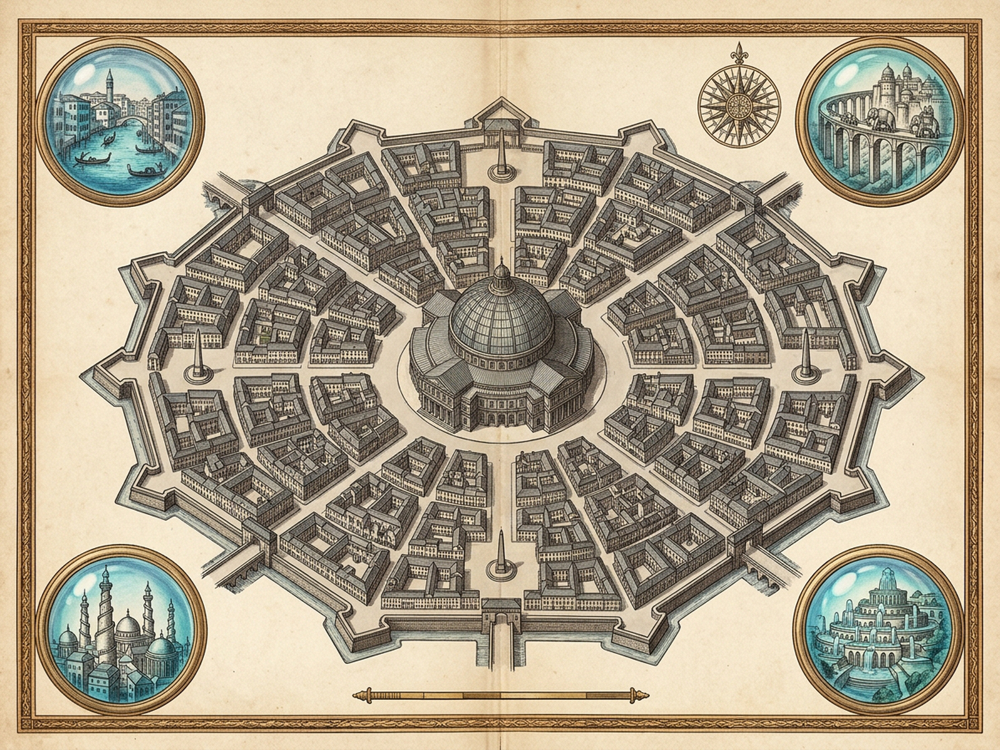

XIIFEDORACentral Metal Building & Refractive Crystal VaultsEpochIII (3)Stone Parcels3 / 12Museum Rooms3 GlobesQuarry Shift: 0%Auto [Space]Mutate Stone [M]Audio [A]Reset [R]Royal Plates [P]Indispensable Gray Stone Metropolis
12 Urban Sectors & Central Cast-Iron Rotunda
Stone 42% · 3 RoomsClick any parcel to quarry stone · Click center dome to chime museum vaultCentral Canal Basin — Granite Freight Culvert (Epoch I)Dried and paved over the central medusa canal basin."What is accepted as necessary when it is not yet so."A Crystal Globe in Every Room
Miniature Blue Models & Counterfactual Workbench
Toy in a Glass Globe · Possible No LongerRoom I — Medusa Canal PondImagining his reflection in the medusa pond that would have collected the waters of the canal (if it had not been dried up)...Superseded in Epoch I by Granite Freight Culvert · Move pointer across pond to shift reflectionSculpt Live Miniature Blue Model [W / B]0 motifs · Sculpting advances stone obsolescenceBIG STONE FEDORA · Epoch III (3/12 Parcels Quarry-Sealed)Assumption of Necessity — "Accepted as necessary when it is not yet so"Equal Place on the Great Khan's AtlasLITTLE GLASS FEDORAS · 3 Toys in Crystal GlobesAssumptions of Desire — "Imagined as possible and, a moment later, possible no longer"ROYAL ARCHIVAL PLATES — GREAT KHAN'S FOLIO XIIDiptychCartographic MapArchitectural PlateLoupe 1.0x [Z]Close [Esc]

Cast-Iron Survey Plaque · Cartographic Plate Pending
Cartographic Survey · Gray Stone Sectors & Central Metal Building